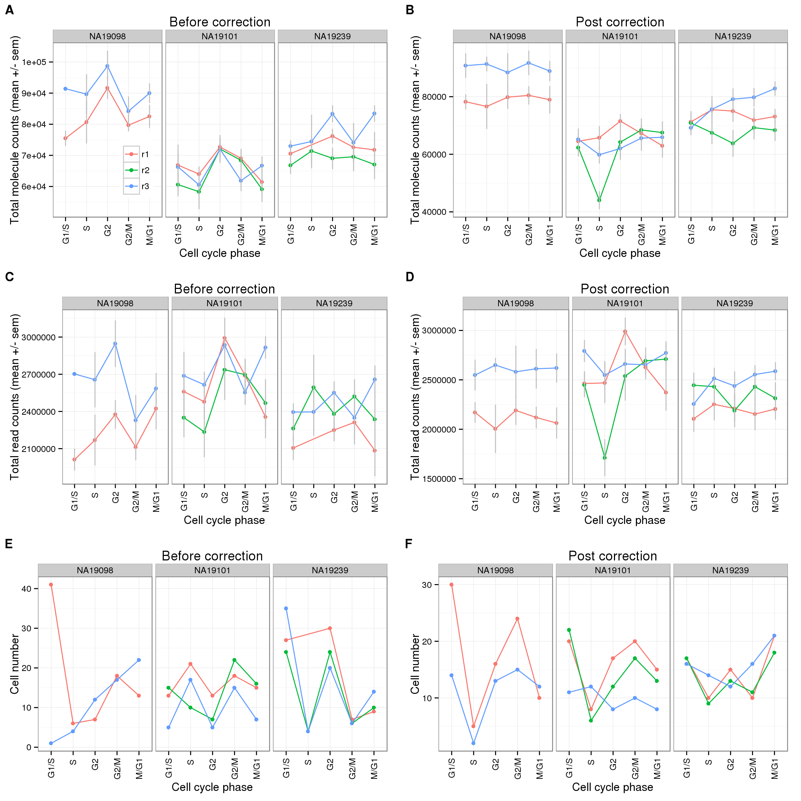

Last updated: 2016-02-02
Code version: 9501eaeb09744a248aad0a918db0e7671688586a
Compute cell-cycle phase assignment of filtered molecule counts and final molecule data. Also to plot total molecule count by cell-cycle phase.
source("functions.R")
require("limma")Loading required package: limmarequire("edgeR")Loading required package: edgeRrequire(ggplot2)Loading required package: ggplot2require(dplyr)Loading required package: dplyr
Attaching package: 'dplyr'
The following objects are masked from 'package:stats':
filter, lag
The following objects are masked from 'package:base':
intersect, setdiff, setequal, unionrequire(data.table)Loading required package: data.table
Attaching package: 'data.table'
The following objects are masked from 'package:dplyr':
between, lasttheme_set(theme_bw(base_size = 12))
library("cowplot")
Attaching package: 'cowplot'
The following object is masked from 'package:ggplot2':
ggsave## Annotation of the filtered data
anno_filter <- read.table("../data/annotation-filter.txt",
header = TRUE,
stringsAsFactors = FALSE)
## Molecule counts of the filtered data
molecules_filter <- read.table("../data/molecules-filter.txt",
header = TRUE,
stringsAsFactors = FALSE)
## Read counts of filtered data
reads_filter <- read.table("../data/reads-filter.txt",
header = TRUE,
stringsAsFactors = FALSE)
## Molecule counts after all corrections
molecules_final <- read.table("../data/molecules-final.txt",
header = TRUE,
stringsAsFactors = FALSE)Import cell-cycle information
cell_cycle_genes <- read.table("../data/cellcyclegenes.txt",
header = TRUE, sep = "\t",
stringsAsFactors = FALSE)
colnames(cell_cycle_genes) <- c("G1.S","S","G2","G2.M","M.G1")Cell-phase assignment helper
cell_phase_assign <- function(cell_cycle_genes, molecules_final) {
cell_phase_score <- sapply(cell_cycle_genes, function(xx){
## create table of each phase
molecules_phase <- molecules_final[rownames(molecules_final) %in% unlist(xx) ,]
## add average count of all genes in the phase
combined_matrix <- rbind(molecules_phase, average = apply(molecules_phase,2,mean) )
## use transpose to compute cor matrix
cor_matrix <- cor(t(combined_matrix))
## take the numbers
cor_vector <- cor_matrix[,dim(cor_matrix)[1]]
## restrict to correlation >= 0.3
molecules_phase_restricted <- molecules_phase[rownames(molecules_phase) %in% names(cor_vector[cor_vector >= 0.3]),]
## output the phase specific scores (mean of normalized expression levels in the phase)
apply(molecules_phase_restricted, 2, mean)
})
## Two-step normalization (by gene and by cell)
## by row (gene)
row_mean <- apply(cell_phase_score, 1, mean)
row_sd <- apply(cell_phase_score, 1, sd)
score_row_normed <- do.call(rbind,
lapply(1:dim(cell_phase_score)[1], function(i) {
(cell_phase_score[i,] - row_mean[i])/row_sd[i]
}) )
## by column
col_mean <- apply(score_row_normed, 2, mean)
col_sd <- apply(score_row_normed, 2, sd)
score_final_normed <- do.call(cbind,
lapply(1:dim(score_row_normed)[2], function(i) {
(score_row_normed[, i] - col_mean[i])/col_sd[i]
})
)
return(score_final_normed)
}Assign phase
cell_phase_before <- apply(
cell_phase_assign(cell_cycle_genes, molecules_filter),
1, function(x) colnames(cell_cycle_genes)[which.max(x)])
cell_phase_after <- apply(
cell_phase_assign(cell_cycle_genes, molecules_final),
1, function(x) colnames(cell_cycle_genes)[which.max(x)])
phase_order <- c("G1.S","S","G2","G2.M","M.G1")
cell_phase_before <- factor(cell_phase_before,
levels = phase_order)
cell_phase_after <- factor(cell_phase_after,
levels = phase_order)Average total number of molecules of the cells assigned to each phase
cbPalette <- c("#999999", "#E69F00", "#56B4E9", "#009E73", "#F0E442", "#0072B2", "#D55E00", "#CC79A7")
data_to_plot <- anno_filter
data_to_plot$cell_phase_before <- cell_phase_before
data_to_plot$cell_phase_after <- cell_phase_after
## Calculate the total molecule counts using molecule filter data
data_to_plot$total_molecules_before <- apply(molecules_filter, 2, sum)
data_to_plot$total_molecules_after <- apply(molecules_filter, 2, sum)
## Calculate the total read counts using read filter data
data_to_plot$total_reads_before <- apply(reads_filter, 2, sum)
data_to_plot$total_reads_after <- apply(reads_filter, 2, sum)
data_to_plot$individual <- factor(data_to_plot$individual)
data_to_plot$replicate <- factor(data_to_plot$replicate)
data_before <- summarise(group_by(data_to_plot, cell_phase_before, individual, replicate),
mean_total_molecules = mean(total_molecules_before),
mean_total_reads = mean(total_reads_before),
cell_number = length(cell_phase_before))
data_after <- summarise(group_by(data_to_plot, cell_phase_after, individual, replicate),
mean_total_molecules = mean(total_molecules_after),
mean_total_reads = mean(total_reads_after),
cell_number = length(cell_phase_after))
stopifnot(sum(data_before$cell_number) == sum(data_after$cell_number))Before correction
cycle_plot_before <- ggplot(data_before, aes(x = as.factor(cell_phase_before),
y = mean_total_molecules,
color = replicate,
group = replicate) ) +
geom_point() + geom_line() +
scale_x_discrete(limits=phase_order, labels=c("G1/S","S","G2","G2/M","M/G1")) +
theme(axis.text.x = element_text(angle = 90, hjust = 0.9, vjust = 0.5)) +
xlab("Cell cycle phase") + ylab("Total molecule counts") +
ggtitle("Before correction")
cycle_plot_before_reads <- ggplot(data_before, aes(x = as.factor(cell_phase_before),
y = mean_total_reads,
color = replicate,
group = replicate) ) +
geom_point() + geom_line() +
scale_x_discrete(limits=phase_order, labels=c("G1/S","S","G2","G2/M","M/G1")) +
theme(axis.text.x = element_text(angle = 90, hjust = 0.9, vjust = 0.5)) +
xlab("Cell cycle phase") + ylab("Total read counts") +
ggtitle("Before correction")
cell_number_before <- ggplot(data_before, aes(x = as.factor(cell_phase_before),
y = cell_number,
color = replicate,
group = replicate) ) +
geom_point() + geom_line() +
scale_x_discrete(limits=phase_order, labels=c("G1/S","S","G2","G2/M","M/G1")) +
theme(axis.text.x = element_text(angle = 90, hjust = 0.9, vjust = 0.5)) +
xlab("Cell cycle phase") + ylab("Cell number") +
ggtitle("Before correction")After correction
cycle_plot_after <- ggplot(data_after, aes(x = as.factor(cell_phase_after),
y = mean_total_molecules,
color = replicate,
group = replicate) ) +
geom_point() + geom_line() +
scale_x_discrete(limits=phase_order, labels=c("G1/S","S","G2","G2/M","M/G1")) +
theme(axis.text.x = element_text(angle = 90, hjust = 0.9, vjust = 0.5)) +
xlab("Cell cycle phase") + ylab("Total molecule counts") +
ggtitle("Post correction")
cycle_plot_after_reads <- ggplot(data_after, aes(x = as.factor(cell_phase_after),
y = mean_total_reads,
color = replicate,
group = replicate) ) +
geom_point() + geom_line() +
scale_x_discrete(limits=phase_order, labels=c("G1/S","S","G2","G2/M","M/G1")) +
theme(axis.text.x = element_text(angle = 90, hjust = 0.9, vjust = 0.5)) +
xlab("Cell cycle phase") + ylab("Total read counts") +
ggtitle("Post correction")
cell_number_after <- ggplot(data_after, aes(x = as.factor(cell_phase_after),
y = cell_number,
color = replicate,
group = replicate) ) +
geom_point() + geom_line() +
scale_x_discrete(limits=phase_order, labels=c("G1/S","S","G2","G2/M","M/G1")) +
theme(axis.text.x = element_text(angle = 90, hjust = 0.9, vjust = 0.5)) +
xlab("Cell cycle phase") + ylab("Cell number") +
ggtitle("Post correction")theme_set(theme_bw(base_size = 12))
plot_grid(cycle_plot_before + facet_grid(~ individual) + theme(legend.position = c(.25,.3)) + labs (col = ""),
cycle_plot_after + facet_grid(~ individual) + theme(legend.position = "none"),
cycle_plot_before_reads + facet_grid(~ individual) + theme(legend.position = "none"),
cycle_plot_after_reads + facet_grid(~ individual) + theme(legend.position = "none"),
cell_number_before + facet_grid(~ individual) + theme(legend.position = "none"),
cell_number_after + facet_grid(~ individual) + theme(legend.position = "none"),
nrow = 3,
labels = LETTERS[1:6])
sessionInfo()R version 3.2.0 (2015-04-16)
Platform: x86_64-unknown-linux-gnu (64-bit)
locale:
[1] LC_CTYPE=en_US.UTF-8 LC_NUMERIC=C
[3] LC_TIME=en_US.UTF-8 LC_COLLATE=en_US.UTF-8
[5] LC_MONETARY=en_US.UTF-8 LC_MESSAGES=en_US.UTF-8
[7] LC_PAPER=en_US.UTF-8 LC_NAME=C
[9] LC_ADDRESS=C LC_TELEPHONE=C
[11] LC_MEASUREMENT=en_US.UTF-8 LC_IDENTIFICATION=C
attached base packages:
[1] stats graphics grDevices utils datasets methods base
other attached packages:
[1] cowplot_0.3.1 data.table_1.9.4 dplyr_0.4.2 ggplot2_1.0.1
[5] edgeR_3.10.2 limma_3.24.9 knitr_1.10.5
loaded via a namespace (and not attached):
[1] Rcpp_0.12.0 magrittr_1.5 MASS_7.3-40 munsell_0.4.2
[5] colorspace_1.2-6 R6_2.1.1 stringr_1.0.0 httr_0.6.1
[9] plyr_1.8.3 tools_3.2.0 parallel_3.2.0 grid_3.2.0
[13] gtable_0.1.2 DBI_0.3.1 htmltools_0.2.6 lazyeval_0.1.10
[17] assertthat_0.1 yaml_2.1.13 digest_0.6.8 reshape2_1.4.1
[21] formatR_1.2 bitops_1.0-6 RCurl_1.95-4.6 evaluate_0.7
[25] rmarkdown_0.6.1 labeling_0.3 stringi_0.4-1 scales_0.2.4
[29] chron_2.3-45 proto_0.3-10